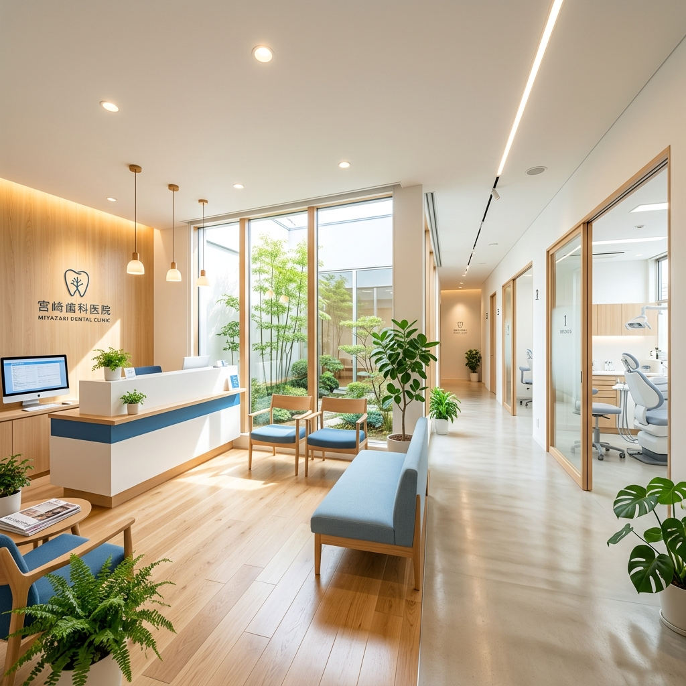
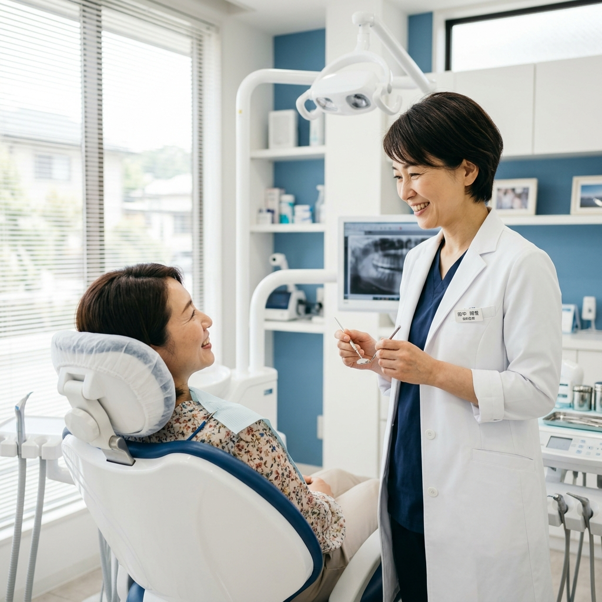
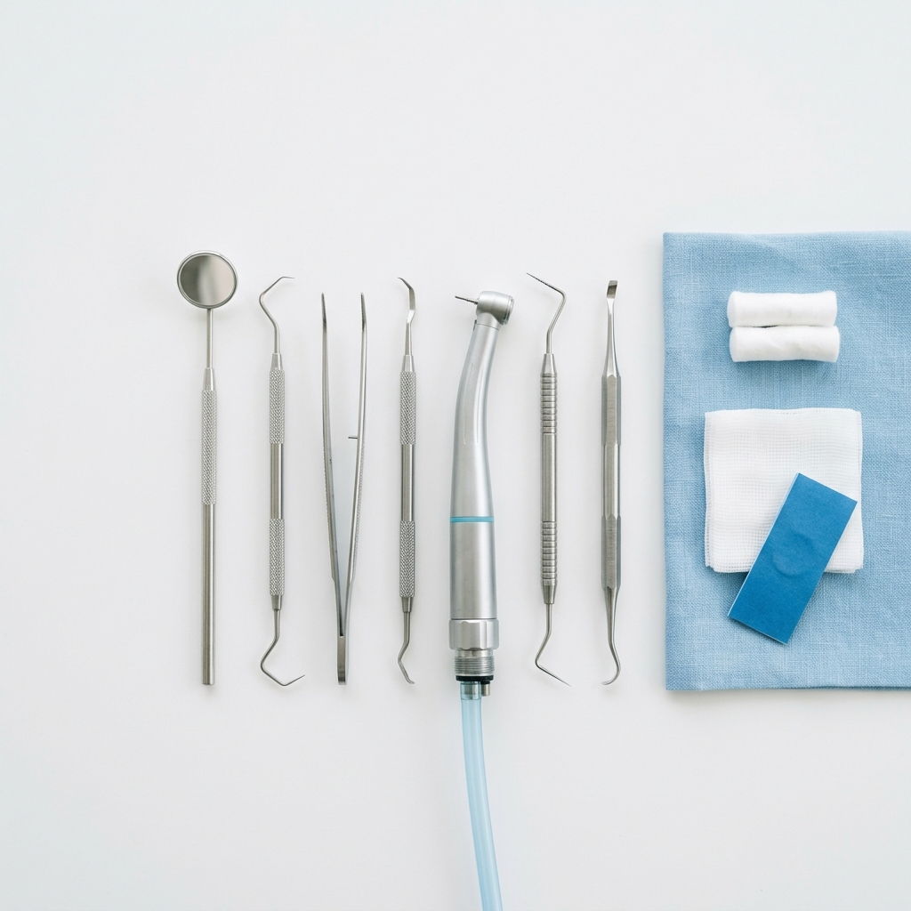
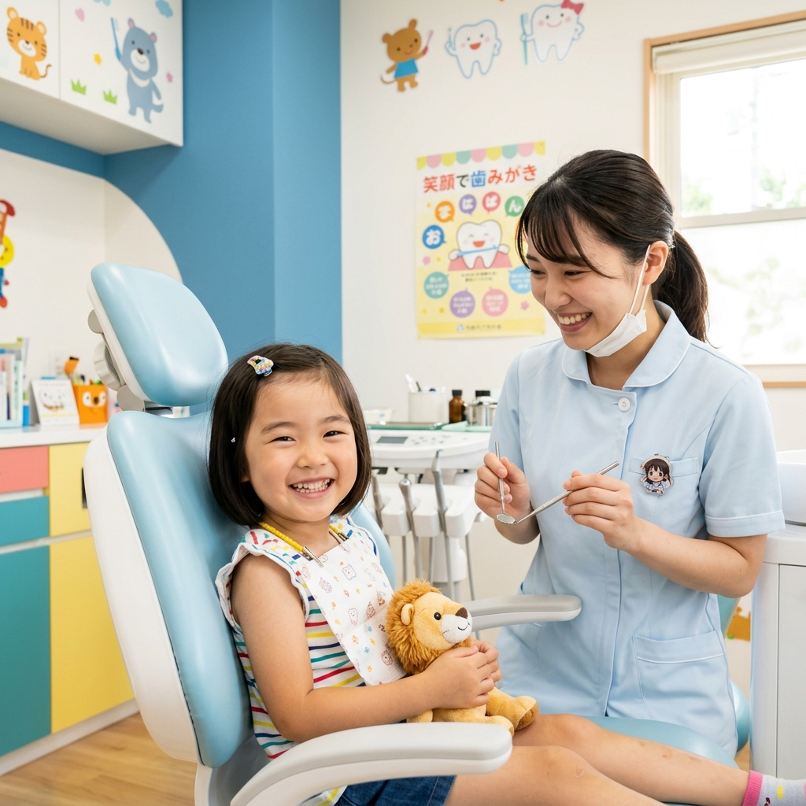
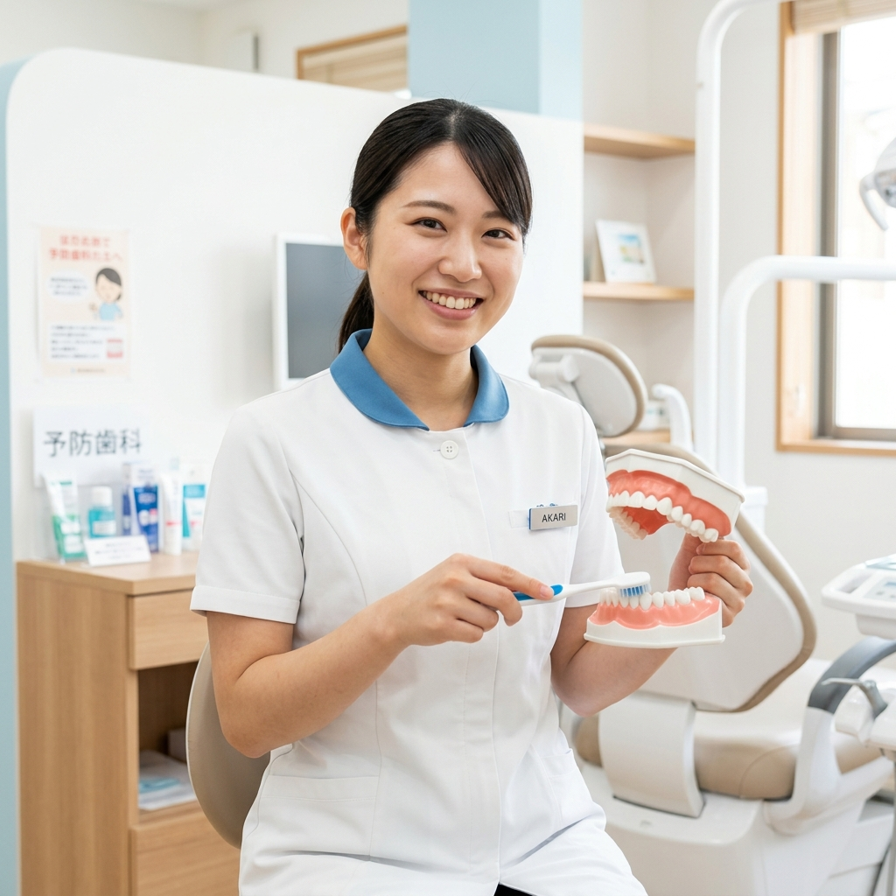
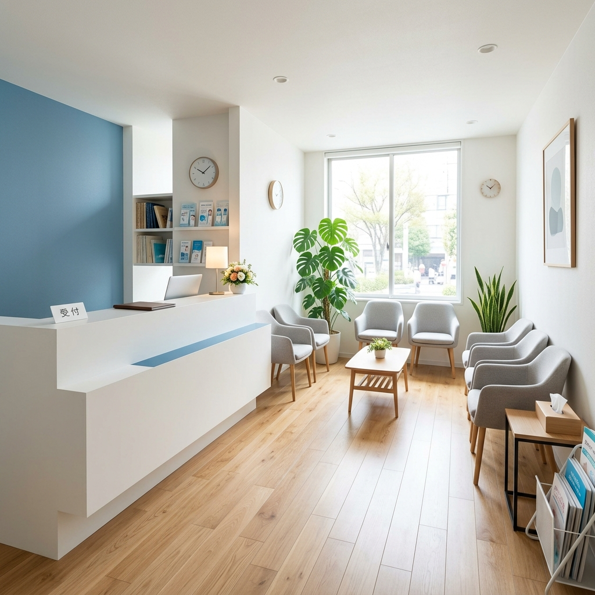
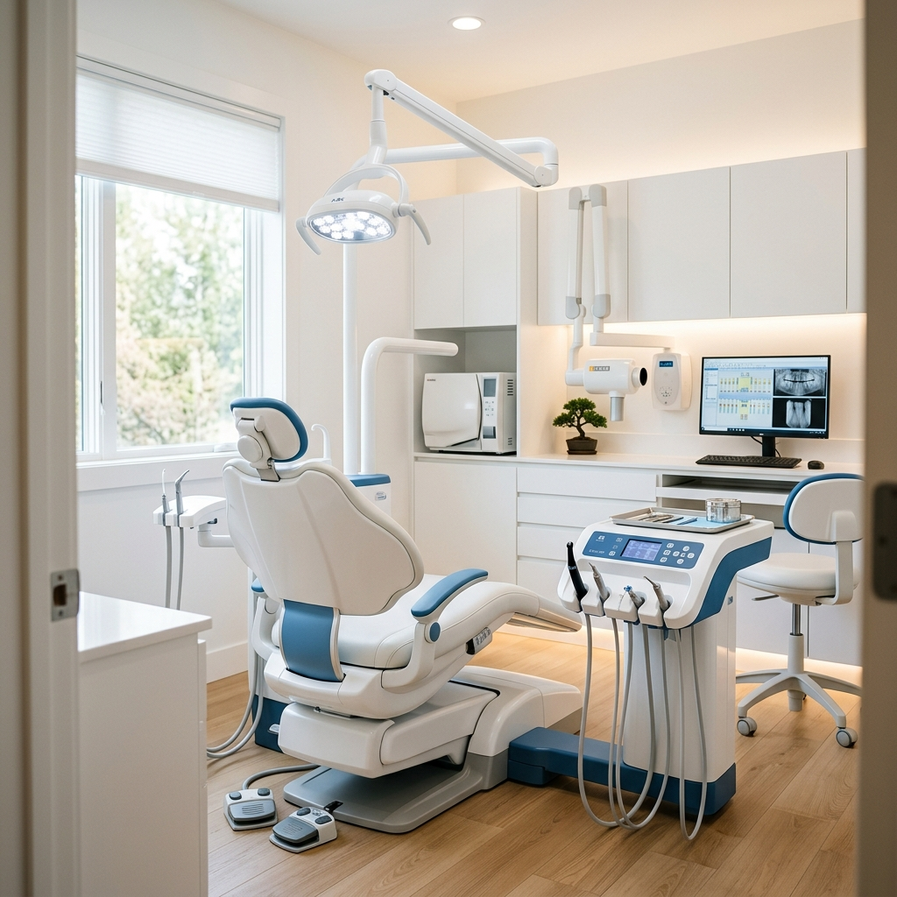
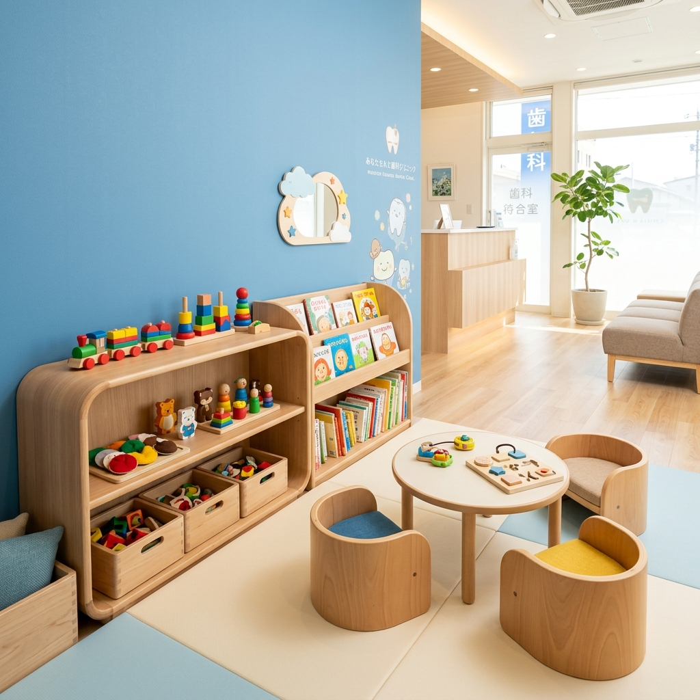

Nishikawa Dental Clinic — Since 2010
笑顔をつくる、
やさしい歯科医療
お子さまからご年配の方まで、
家族みんなで通える歯科医院
- 2026.04.01 お知らせ GW期間の休診のお知らせ
- 2026.03.15 お知らせ ホームページをリニューアルしました
- 2026.03.01 設備 新しい歯科用CTを導入しました
あなたの笑顔と歯を、
ずっと守りたい
西川歯科クリニックは、「笑顔をつくる、やさしい歯科医療」をコンセプトに、2010年の開院以来、地域の皆さまの歯の健康を守り続けてきました。
「歯医者は怖い」「痛い」というイメージを払拭するため、痛みに配慮した治療と丁寧なカウンセリングを大切にしています。一人ひとりの患者さまと真剣に向き合い、納得いただいた上で治療を進めます。

診療内容
患者さまのお悩みに、幅広い診療で対応します

一般歯科
むし歯・歯周病・入れ歯など、お口のトラブル全般に対応します。できるだけ削らない、痛みに配慮した治療を心がけています。

小児歯科
お子さまの歯の発育を支え、むし歯予防から歯みがき指導まで。キッズスペース完備で、お子さまが楽しく通える環境を整えています。

予防歯科
定期的なクリーニングやPMTCで、むし歯・歯周病を未然に防ぎます。「治す」から「守る」歯科医療をめざします。
院内設備



清潔感を大切にした院内で、患者さまにリラックスしていただけるよう環境づくりに力を入れています。最新の歯科用CTや口腔内カメラなど、精度の高い治療をサポートする設備を導入しています。
診療時間・アクセス
| 診療時間 | 月 | 火 | 水 | 木 | 金 | 土 | 日・祝 |
|---|---|---|---|---|---|---|---|
| 9:30〜13:00 | ○ | ○ | ○ | ─ | ○ | ○ | ✕ |
| 14:30〜19:00 | ○ | ○ | ○ | ─ | ○ | △ | ✕ |
- 木曜・日曜・祝日は休診
- △：土曜午後は14:30〜17:00
- 最終受付は診療終了30分前
まずはお気軽にご相談ください
初めての方も、久しぶりの方も、どうぞお気軽にどうぞ。スタッフ一同、笑顔でお待ちしております。
お電話でのご予約
【受付時間】平日 9:30〜18:30 ／ 土曜 9:30〜16:30 ／ 木曜・日祝 休診